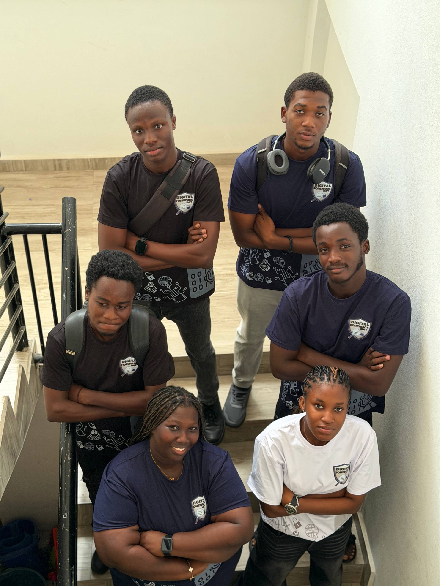
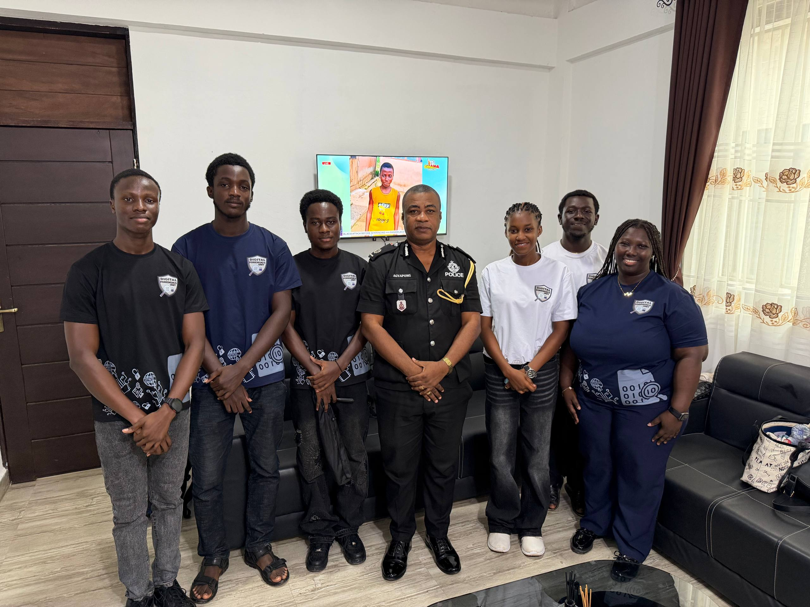
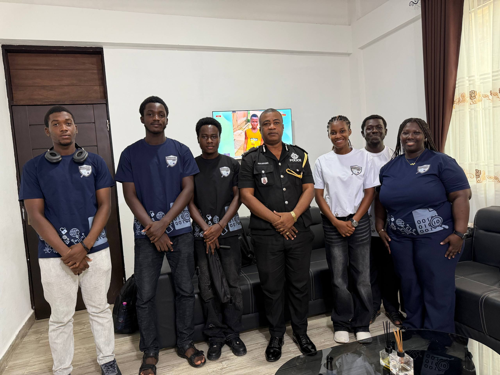
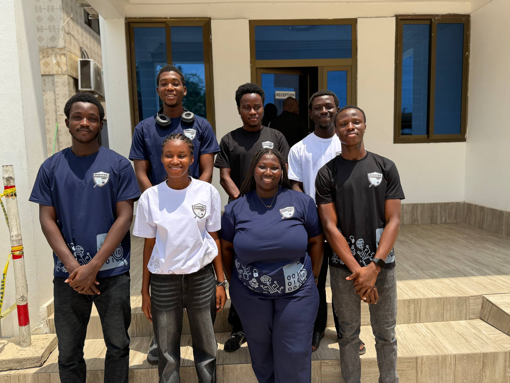
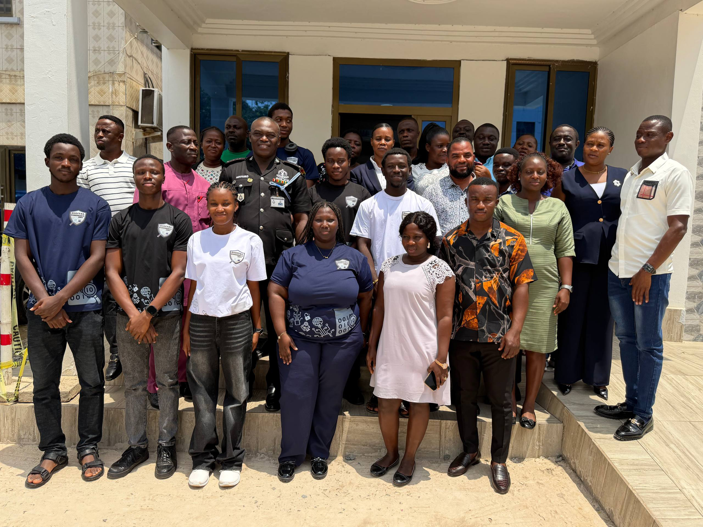
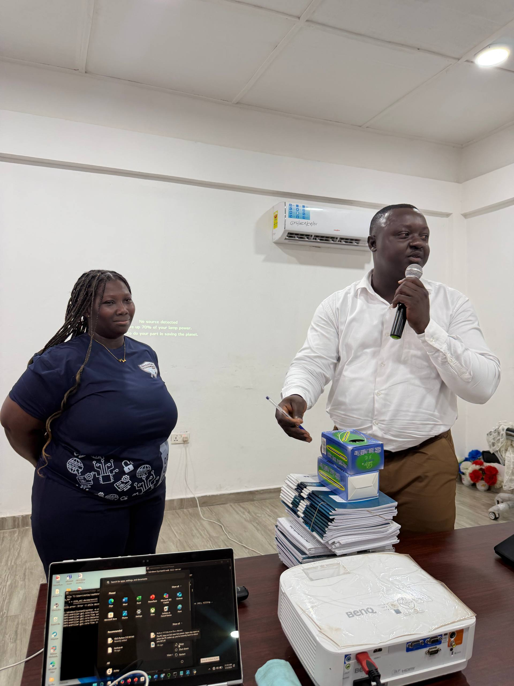
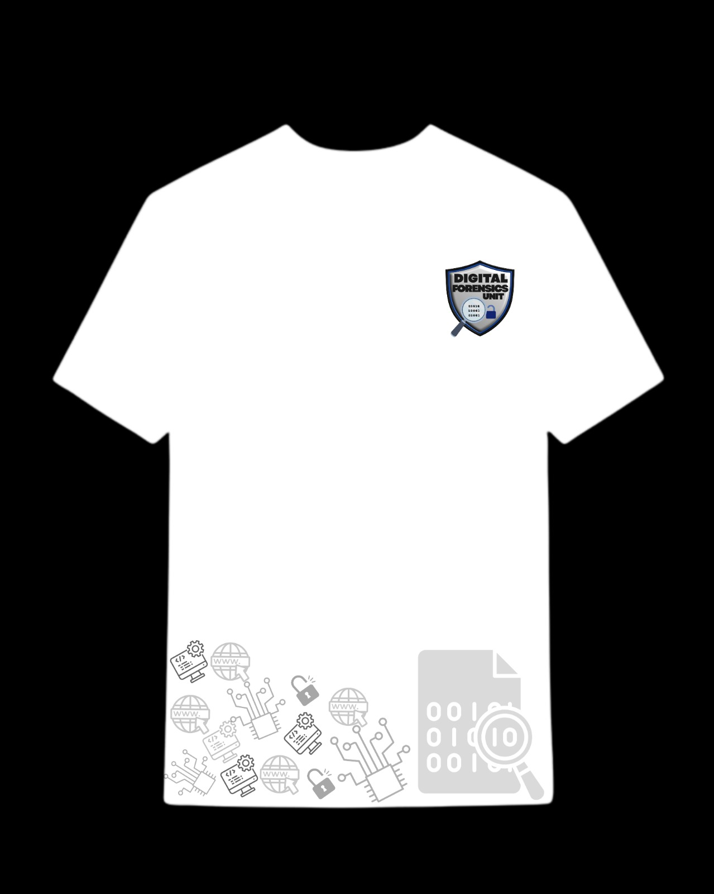
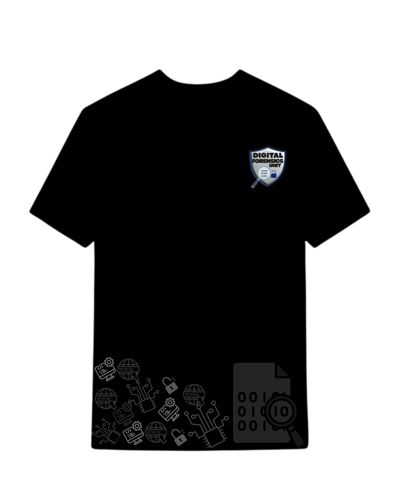
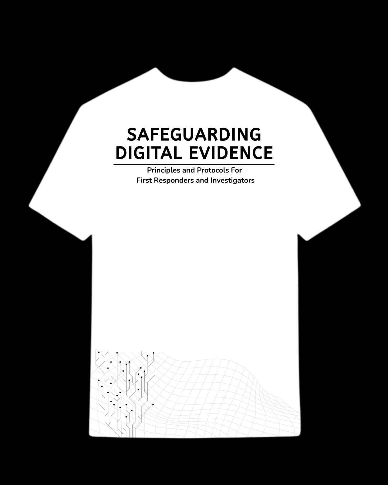
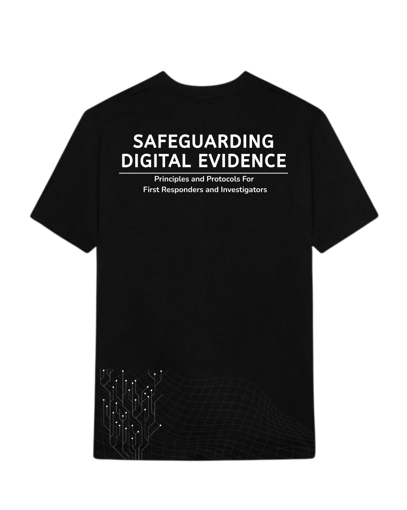

Digital Evidence in Modern Policing
Understand the forms of evidence officers encounter and how routine actions can unintentionally alter critical data.
- Mobile and device evidence awareness
- Risk of accidental tampering
- Case-readiness implications
April 3, 2026 | Tarkwa, Ghana
CyberLab is a practical engagement focused on teaching officers how to identify, preserve, and escalate digital evidence safely. The sessions combine real-world scenarios with first-responder best practices to improve case quality and courtroom confidence.
Covers common digital artifacts in routine policing and how small handling mistakes can weaken investigations.
Scenario-driven walkthrough of securing devices, isolating them from networks, documenting actions, and storing evidence safely.
Clarifies legal handling boundaries and when evidence should be escalated to CID, cyber units, or certified forensic specialists.
The workshop is built around practical first-responder outcomes for digital investigations.
Understand the forms of evidence officers encounter and how routine actions can unintentionally alter critical data.
Learn the immediate actions to take at scene level before handoff to specialist units.
Build clarity on legal requirements, role boundaries, and escalation routes to maintain evidence integrity.
Structured training plan from opening to final wrap-up.
Welcome, team intro, context setting, and baseline awareness prompts.
Digital evidence in modern policing with guided Q&A.
Scenario-based first-responder handling walkthrough.
Refreshment pause and informal facilitator interaction.
Chain of custody, legal considerations, and escalation guidance.
Key takeaways, checklist distribution, and closing remarks.
Visual references for facilitation style, interactive sessions, and event T-shirt designs.
Photos from practical engagement sessions.






These images show the official T-shirt designs prepared for the event.




Quick clarifications for participating officers and coordinators.
The event is designed for Tarkwa Police Department officers and first responders who handle phones, devices, and digital records.
Strengthen frontline digital evidence handling so data stays admissible, reliable, and ready for specialist escalation.
The draft proposal budget is GHS 775.00, covering souvenirs and customized T-shirts for team members and participation awards.
Review the event context and meet the facilitators delivering each session.